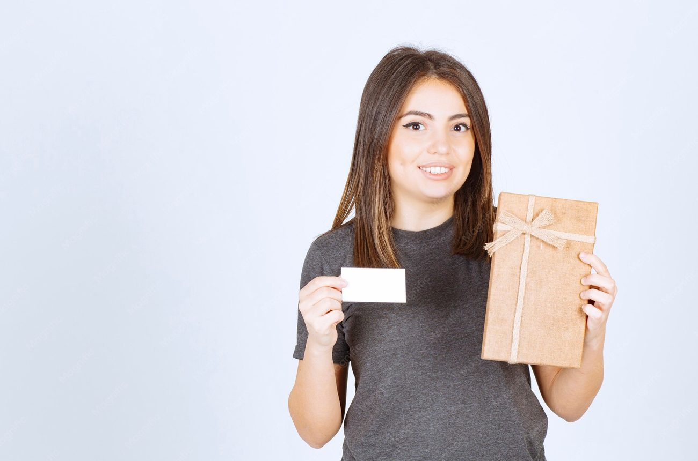

Quel est le meilleur titre-restaurant ? Le comparatif de 8 cartes
Huit émetteurs agréés comparés, de l'acteur historique à la fintech.
Carte, application ou chèque papier. Nous comparons les émetteurs agréés sur le réseau d'acceptation, les frais facturés à l'employeur, les outils de commande et la qualité du suivi.

Huit émetteurs agréés comparés, de l'acteur historique à la fintech.



Huit émetteurs agréés comparés, de l'acteur historique à la fintech.
Quatre émetteurs se partagent l'essentiel du marché français du titre-restaurant.
Aucune obligation légale, aucun seuil d'effectif, un dispositif qui coûte moins cher qu'une augmentation.
Part patronale, frais de gestion, frais de carte, coût comparé à une prime.
Six cartes et chèques cadeaux multi-enseignes comparés sur le nombre d'enseignes, le support, la souplesse de commande et les frais.

Le plafond URSSAF, la règle des enfants, le calendrier de commande et le budget pour 20, 100 et 500 salariés.
Note globale sur 10, relevé de démonstration. Le réseau d'acceptation et l'accompagnement pèsent autant que l'application, parce que c'est le service RH qui gère le dispositif au quotidien.
Voir la méthode de notation


Comparez deux émetteurs de titres-restaurant sur nos cinq critères.
Sur notre relevé de démonstration, UpDéjeuner, la solution titre-restaurant d'Upcoop (ex-Chèque Déjeuner), obtient 8,6/10, devant Swile (8,3) et Ticket Restaurant d'Edenred (8,2). Swile garde la meilleure application, Edenred le réseau le plus ancien.
La part patronale est exonérée de cotisations jusqu'à 7,32 euros par titre en 2026, à condition qu'elle représente entre 50 et 60 % de la valeur du titre. La valeur faciale optimale se situe donc entre 12,20 et 14,64 euros.
Le plafond d'utilisation est de 25 euros par jour, chez les restaurateurs et dans les commerces alimentaires affiliés. Il ne se cumule pas d'un jour sur l'autre.
Oui. Un salarié en télétravail a droit aux titres-restaurant dans les mêmes conditions qu'un salarié sur site, dès lors que son repas est compris dans son horaire de travail journalier.
La carte est devenue la norme, plus de 90 % du volume passe par une carte ou une application. Le chèque papier reste utile pour des équipes peu équipées, mais sa disparition est programmée par la réforme en cours.
Un email par mois avec le classement des émetteurs, les nouveaux plafonds URSSAF et les comparatifs publiés.
Pas de publicité, désinscription en un clic.